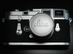
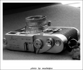

发言被禁2014-01-03 12:055 分
操作性 5.00功能性 5.00美观性 5.00趣味性 5.00耐用性 5.00性价比 5.00
Fotosig2013-10-10 15:095 分
操作性 5.00功能性 5.00美观性 5.00趣味性 5.00耐用性 5.00性价比 5.00
thambar2013-03-26 13:385 分
操作性 5.00功能性 5.00美观性 5.00趣味性 5.00耐用性 5.00性价比 5.00
yogu2012-04-23 16:394.58 分
操作性 5.00功能性 4.50美观性 5.00趣味性 5.00耐用性 5.00性价比 3.00
zz3333332010-03-09 10:185 分
操作性 5.00功能性 5.00美观性 5.00趣味性 5.00耐用性 5.00性价比 5.00
rayjean2008-10-10 19:594.58 分
操作性 4.50功能性 4.50美观性 4.50趣味性 5.00耐用性 5.00性价比 4.00
极品光影2008-07-28 16:404.67 分
操作性 5.00功能性 4.00美观性 5.00趣味性 5.00耐用性 4.50性价比 4.50
chauceur2008-01-22 18:494.83 分
操作性 5.00功能性 4.50美观性 5.00趣味性 5.00耐用性 5.00性价比 4.50

shangyuan2007-08-04 17:044.92 分
操作性 4.50功能性 5.00美观性 5.00趣味性 5.00耐用性 5.00性价比 5.00
五十四军2007-06-01 18:304.92 分
操作性 5.00功能性 5.00美观性 5.00趣味性 5.00耐用性 5.00性价比 4.50
